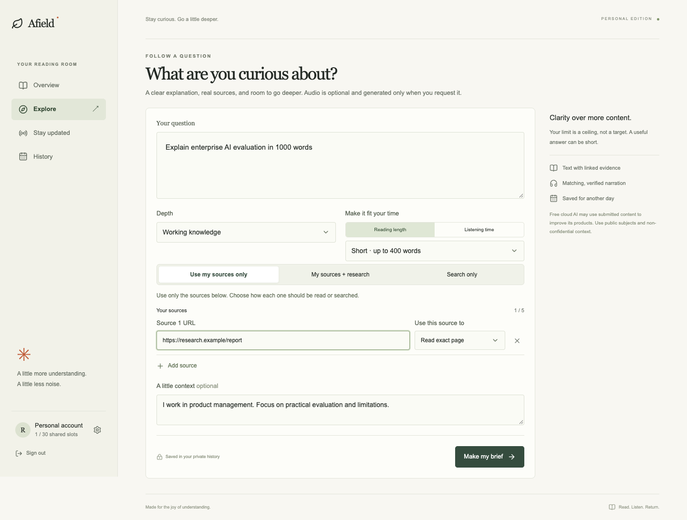
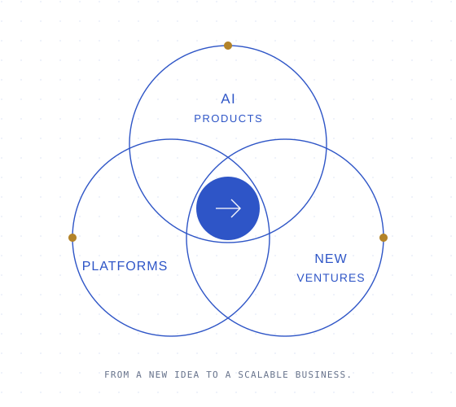
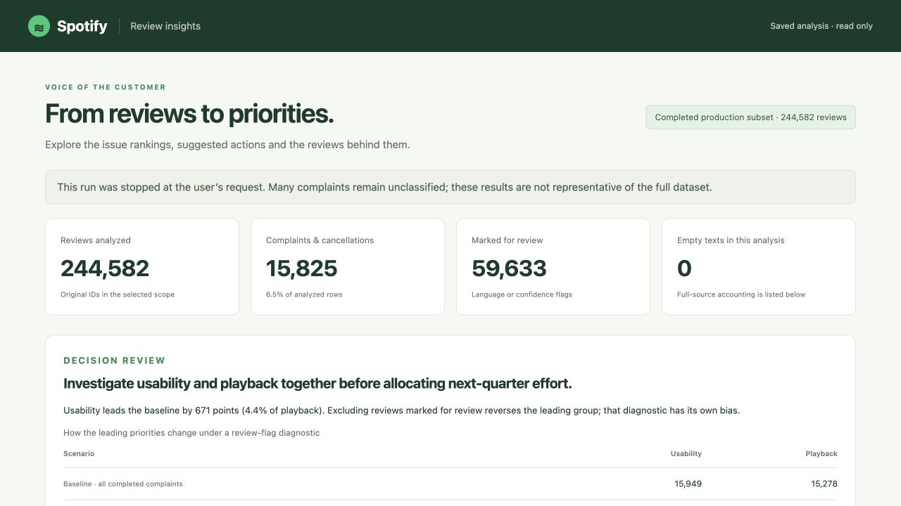

Actual app · synthetic walkthrough dataAfield ↗
An AI research companion that suggests subtopics and learning sources, creates cited briefs, and lets you read or listen on your own terms.
AI PRODUCTS · PLATFORMS · NEW VENTURES
AI product leadership.
With platform depth.
My strength is connecting the product experience with the system and business model behind it. I’ve shipped AI-assisted banking, launched new revenue lines, and rebuilt core platforms. Today I apply that operating experience to AI tools for research, decisions, and automation.
Berkeley Haas MBA ’28 · Previously Cake, Fundiin & ZaloPay

SELECTED PROJECTS

Actual app · synthetic walkthrough dataAn AI research companion that suggests subtopics and learning sources, creates cited briefs, and lets you read or listen on your own terms.

Live dashboard · saved analysisConnecting customer feedback to product priorities and inspectable evidence.
 Reference architecture · fictional demonstration
Reference architecture · fictional demonstrationA reusable workflow connecting discovery, company research, and evidence-backed preparation.
BACKGROUND
Led stock-trading and travel launches, including a travel mini-app that generated $45K in six months. Also shipped AI-assisted transfers and configurable risk capabilities.
Expanded lending capacity from $2M to $20M through a platform now connecting 5+ lenders. Launched QR Pay-Later, redesigned the lending core, and partnered with Data Science on ML risk screening that halved manual-review work.
Built enterprise payment capabilities for Google, ByteDance, and Grab, growing ride-hailing transactions 50% and payout volume 40%. Launched cross-border remittance and used customer interviews and experiments to improve payment conversion 20%.
A global perspective on AI-native products, business models, and scaling across markets. Building research and decision tools alongside the MBA.
Understanding how products find their market: customer insight, positioning, and monetization across physical, service, and digital businesses.
BEYOND THE ROADMAP
Street photography and urban storytelling. Contemporary art and indie music. Mountain trails when it’s time to zoom out.
LET’S CONNECT
I’m interested in AI products, ambitious platforms, and teams taking useful ideas to a global audience.
SAME PERSON. STRUCTURED FORMAT.
A plain-text profile for readers, assistants, and curious machines.
# Hieu Nguyen Product leader · AI products, platforms & new ventures My strength is connecting the product experience with the system and business model behind it. I’ve shipped AI-assisted banking, launched new revenue lines, and rebuilt core platforms. Today I apply that operating experience to AI tools for research, decisions, and automation. I work across AI products, platforms, and new ventures. My experience connects commercial strategy with technical product design: deciding where to invest, what to build or integrate, and how to launch and scale it. At Cake, Fundiin, and ZaloPay, that meant AI banking, stock-trading and travel launches, new credit distribution, multi-lender infrastructure, and enterprise payment capabilities. My independent builds apply the same thinking to research, feedback intelligence, and AI workflows. ## Professional background ### Cake by VPBank Senior Technical Product Manager (L5) | 2025–2026 Led stock-trading and travel launches, including a travel mini-app that generated $45K in six months. Also shipped AI-assisted transfers and configurable risk capabilities. ### Fundiin Principal Product Manager / Senior Product Manager | 2023–2025 Expanded lending capacity from $2M to $20M through a platform now connecting 5+ lenders. Launched QR Pay-Later, redesigned the lending core, and partnered with Data Science on ML risk screening that halved manual-review work. ### ZaloPay · VNG Product Manager / Associate Product Manager | 2021–2023 Built enterprise payment capabilities for Google, ByteDance, and Grab, growing ride-hailing transactions 50% and payout volume 40%. Launched cross-border remittance and used customer interviews and experiments to improve payment conversion 20%. ## Education ### University of California, Berkeley, Haas School of Business Master of Business Administration | May 2028 A global perspective on AI-native products, business models, and scaling across markets. Building research and decision tools alongside the MBA. ### National Economics University, Hanoi Bachelor, Marketing Management | June 2021 Understanding how products find their market: customer insight, positioning, and monetization across physical, service, and digital businesses. ## Independent projects ### Afield An AI research companion that suggests subtopics and learning sources, creates cited briefs, and lets you read or listen on your own terms. My reading was scattered across newsletters, email, blogs, and news sites. Saving more links did not make it easier to connect the ideas or keep up with a topic. A roughly 45-minute trip across the Bay created another opportunity: I could listen when reading a screen was impractical. I wanted the experience to fit my interests and available time, rather than another feed to scroll. I designed two connected journeys. Explore answers a specific question; Stay Updated follows a topic over time. AI suggests subtopics and recurring learning sources, while the reader chooses what to follow. The reader can set depth, source coverage, reusable briefing blocks, and a reading or listening budget. The output is a saved, cited text brief with audio available on demand. The current source layer reads public pages and feeds. Stack: Next.js, TypeScript, Gemini, Tavily, Supabase. Status: Personal proof of concept. The repository includes the implementation, product decisions, and walkthroughs using synthetic data. Live deployment is on the way. [Full case study](projects/afield.html) · [Repository](https://github.com/hieu-nguyen-nth/afield) ### Spotify Insight Pipeline Connecting customer feedback to product priorities and inspectable evidence. A large review dataset can produce an impressive chart without a trustworthy product recommendation. Topic labels are judgments, review volume is not the same as harm, and a priority score can hide uncertainty. I wanted to connect raw feedback to a recommendation that a reader could inspect, challenge, and trace back to the original reviews. I used a Codex-assisted workflow to define and review the pipeline, Jev for bounded language-classification tasks, Python and SQL for data preparation and arithmetic, and local Qwen for issue names and recommendation drafts. The run ingested 660,622 source rows and completed classification for 244,582 original reviews. The dashboard publishes saved findings and selected evidence; visiting it does not trigger another model call. Stack: Python, SQL, Jev, Qwen, Supabase. Status: Completed analysis subset. The dashboard and repository expose saved results, evaluation reports, and a decision memo. Findings describe the completed subset; they are not population estimates. [Full case study](projects/spotify-insight-pipeline.html) · [Repository](https://github.com/hieu-nguyen-nth/spotify-insight-pipeline) ### Personal Recruiting System A reusable workflow connecting discovery, company research, and evidence-backed preparation. Job discovery, company research, relationship notes, and résumé preparation often become separate activities. Two roles at one company can lead to duplicate research; a new chat can lose the last decision; a polished draft can drift beyond the candidate’s actual experience. The product problem was continuity and evidence, not the absence of another application. I designed a coordinator that routes work through reusable methods for evaluation, company research, networking, tailoring, and QA. Notion holds durable Jobs, Companies, People, and Events records. Candidate evidence stays in private source files. The public repository is a reference implementation with a fully fictional worked case, allowing readers to inspect the method without exposing personal recruiting records. Stack: Codex, Reusable skills, Notion, MCP. Status: Reference implementation. The public repository contains a fictional demonstration, schemas, methods, and design decisions. It does not contain private candidate records or establish a live automated installation. [Full case study](projects/personal-recruiting-system.html) · [Repository](https://github.com/hieu-nguyen-nth/personal-recruiting-system) ## Selected professional stories ### Cake by VPBank — Launch stock trading within a broader investment strategy Challenge: Cake’s investment offer was narrow, and an existing fund partnership was approaching its end. Customers were interested in more asset classes, but disconnected partner products would fragment their experience. My contribution: I shaped a broader investment proposition, then prioritized stock trading as the first launch. I led the roadmap, partner integration, and delivery while designing the customer experience around a platform that could add specialist partners over time. Result: The investment launch contributed an estimated $100K in annual revenue. The stock-trading launch was the first step; the broader multi-asset roadmap was phased rather than all launched together. [Full decision story](stories/cake-investment.html) ### Cake by VPBank — Build a travel business on an embeddable mini-app platform Challenge: Separate partner SDKs fragmented the travel experience and left Cake dependent on provider interfaces, release cycles, and distribution economics. My contribution: I reframed the opportunity as a travel-commerce business with a shared customer journey. I led partner solution design, product requirements, architecture, and launch around a mini-app that could release independently and be embedded across distribution channels. Result: The in-app travel launch generated $45K in new revenue in its first six months. Its embeddable mini-app architecture enabled independent releases and distribution across banks and partners. [Full decision story](stories/cake-travel.html) ### Cake by VPBank — From chat messages to a review-ready transfer Challenge: Payment details often arrive in chat messages or images. Moving them into a banking app meant manually retyping account details and amounts. My contribution: I drove the text/image transfer experience that extracts payment information into a structured draft. The product keeps customer review and authorization as explicit steps; voice banking remained a separate roadmap and prototype track. Result: The launched parsing experience correctly prefilled approximately 80% of inputs. I also trained 10+ PMs in AI-assisted prototyping and automation. [Full decision story](stories/cake-ai.html) ### Cake by VPBank — Give Risk a control plane, not an engineering queue Challenge: Policy changes depended on product and engineering releases, leaving Risk waiting days to respond to emerging patterns. My contribution: I worked with Risk to translate operational policies and data models into configurable controls, aligning backend, mobile, web, and operations teams around a shared platform. Result: Fraud controls could be deployed in about an hour instead of days, protecting products serving 700K+ monthly active users. [Full decision story](stories/cake-risk.html) ### Fundiin — Launch a new credit behavior through familiar QR payments Challenge: Merchant-by-merchant integrations limited where customers could use Fundiin credit. Everyday QR payments offered a broader way to reach them. My contribution: I led discovery, the business case, roadmap, and launch of QR Pay-Later. We reused the existing lending core for the MVP to test demand before investing in a larger platform rebuild. Result: The product attracted 20K users in its first month and reached 50% of company loan volume within eight months. [Full decision story](stories/fundiin-qr.html) ### Fundiin — Build a scalable multi-lender platform Challenge: A limited funding model put a ceiling on growth. Another one-off lender connection would add capacity while leaving the same integration problem for the next partner. My contribution: I led the business case, product design, and launch of a standardized loan model with a scalable partner-integration layer. We launched with one lender while designing the shared foundations for additional institutions. Result: The launch expanded monthly funding capacity from $2M to $20M across three financial institutions. The platform now connects 5+ lenders. Funding capacity measures available capital, not actual monthly disbursement. [Full decision story](stories/fundiin-lenders.html) ### Fundiin — Redesign the core while the business keeps running Challenge: Separate channel flows duplicated rules and fragmented data. The inherited lending core was becoming a constraint on new products and growth. My contribution: I led a 25-person team through a hybrid build-versus-buy strategy: own the differentiating lending logic, integrate standardized KYC and payment services, and migrate in phases instead of replacing everything at once. Result: The redesign enabled 4× loan-volume growth, reduced operating costs by 30%, and halved product time-to-market. [Full decision story](stories/fundiin-core.html) ### Fundiin — Scale risk screening with ML and human judgment Challenge: Static risk rules were hard to maintain and missed combinations of signals, while manual review limited operational capacity. Automating decisions required clear error tradeoffs and a workflow Risk could trust. My contribution: I aligned Risk, Data Science, and Engineering on business goals, decision thresholds, and review boundaries. We used AutoML for the first iteration, validated in shadow mode, and staged the rollout while retaining human review for uncertain cases. Result: ML-based screening reduced manual-review workload by 50% across a $2M monthly lending portfolio. Data Science owned model development; my contribution connected business framing, evaluation, workflow design, and deployment. [Full decision story](stories/fundiin-ml-risk.html) ### ZaloPay · VNG — Open a new cross-border product in six months Challenge: ZaloPay’s domestic wallet needed new partner, compliance, settlement, and operational capabilities to support inbound international remittances. My contribution: I led a 20-person cross-functional team across Engineering, Design, Compliance, Operations, and Marketing, aligning the customer journey with a partnership-led operating model. Result: We launched a new remittance product and revenue stream in six months, establishing infrastructure for cross-border transfers. [Full decision story](stories/zalo-remittance.html) ### ZaloPay · VNG — Build enterprise integrations around reusable payment capabilities Challenge: Enterprise partners had different needs for collecting payments, sending payouts, and reserving funds before final settlement. My contribution: I led B2B product and API integrations across partners including Google, ByteDance, Grab, and Lazada, translating business needs into product flows and cross-company delivery plans. Result: Across the enterprise portfolio, ride-hailing transactions grew 50%, payout volume grew 40%, and integrations acquired 100K users. These are portfolio results, not a claim that every partner delivered every metric. [Full decision story](stories/zalo-apis.html) ### ZaloPay · VNG — Find the real payment friction through data and customer interviews Challenge: Payment conversion showed users dropping out, but the aggregate funnel could not distinguish customer confusion, missing events, and technical failures across partner flows. My contribution: I combined SQL and Python analysis with 20+ customer interviews and usability testing. The research challenged an initial layout hypothesis and exposed downstream device-related reliability issues, changing what we prioritized before further UX experiments. Result: The work improved payment conversion by 20% through instrumentation fixes, customer insight, and 10 A/B-tested funnel experiments. [Full decision story](stories/zalo-payment-conversion.html) ## Interests Street photography, Contemporary art, Indie music, Hiking ## Links - Linkedin: https://www.linkedin.com/in/hieu-ng-trung/ - Github: https://github.com/hieu-nguyen-nth - Blog: https://substack.com/@hieutnguyen Professional background is based on the résumé supplied by Hieu Nguyen on November 1, 2026. Project descriptions are based on the linked repositories. This profile is an introduction, not a complete résumé.